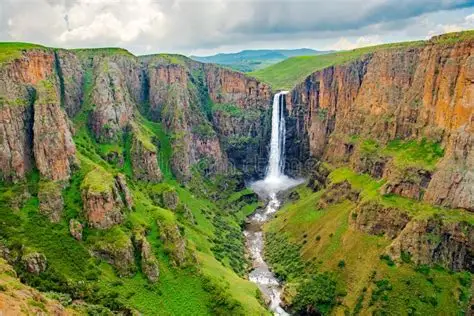
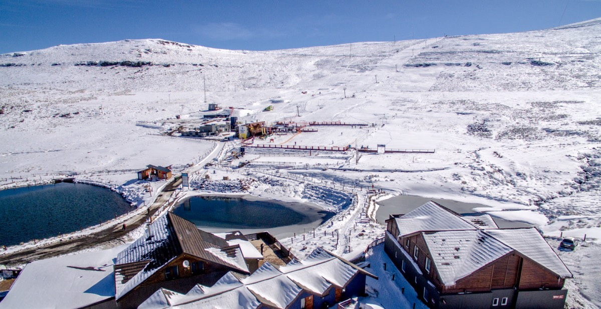
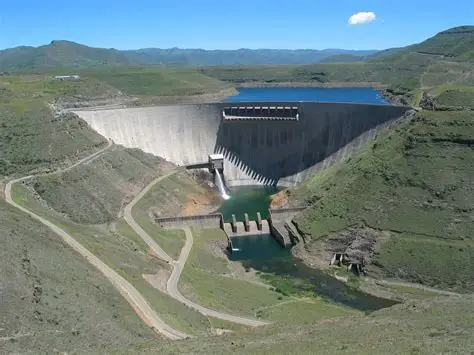
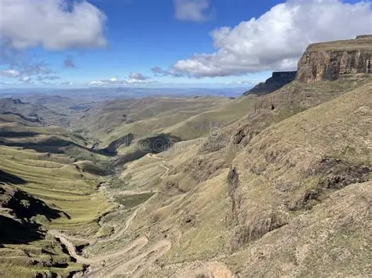

Explore Our Destinations
From single-drop waterfalls to historic mountain plateaus and ski slopes, discover the wonders of the Kingdom in the Sky.
Places Worth Discovering
Click "Plan a Visit" on any destination to automatically start a tailored travel enquiry.

Maletsunyane Falls
One of Southern Africa's highest single-drop waterfalls (192 meters) near Semonkong. Famous for misty rainbow gorges, pony trekking, and the world's longest commercially operated abseil.
Plan a Visit →
Thaba Bosiu
The sacred mountain stronghold and historic birthplace of the Basotho nation. Explore King Moshoeshoe I's ancient fortress, royal tombs, and the renowned cultural village.
Plan a Visit →
Sehlabathebe National Park
Lesotho's oldest nature reserve and a UNESCO World Heritage site. Renowned for its rolling highland grasslands, sculpted rock arches, rare wildflowers, and San rock paintings.
Plan a Visit →
AfriSki Mountain Resort
Southern Africa's premier ski and snowboarding destination located at 3,222m in the Maluti Mountains. Offers winter snow sports, high-altitude trail running, and mountain biking in summer.
Plan a Visit →
Katse Dam
A jaw-dropping civil engineering marvel nestled deep in the central Maluti mountains. Africa's second largest double-curvature arch dam offers scenic boat cruises and a high-altitude botanical garden.
Plan a Visit →
Sani Pass
A legendary and dramatic 4x4 mountain pass connecting KwaZulu-Natal with the roof of Lesotho. Climb steep rocky hairpins to celebrate with a drink at the highest pub in Africa (2,874m).
Plan a Visit →Essential Travel Tip for Lesotho
Lesotho's mountain weather can change rapidly within minutes. Pack warm layers even in summer, carry valid passports for border posts, and arrange high-clearance 4x4 vehicles when traversing mountain passes or unpaved highland routes.